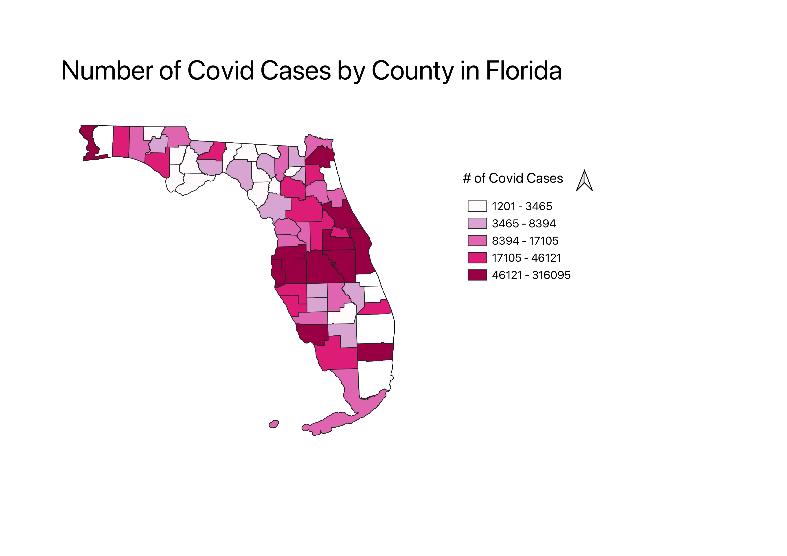

Homework 7
This map shows the concentration of COVID in the state of Florida in 2020. The data is organized by number of cases in each county. I chose this data set because I was interested to see if the cases in Florida were concentrated in more populated counties, near bigger cities, near the coast, or near the theme parks.
